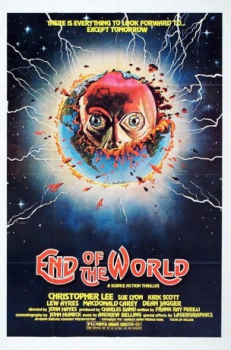
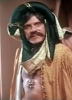

Country:United States, 86 minutes
Spoken languages:English
Genres:Horror, Mystery, Sci-Fi, Thriller
Director(s):John Hayes
Writer(s):Frank Ray Perilli
Video Codec:Unknown
Number: 69


Certification:PG
Storyline:
After witnessing a man's death in a bizarre accident, Father Pergado goes on a spiritual retreat, where he encounters his alien double bent on world conquest.
Cast: 

Medium: Original DVD,
Comments: Part of: 100 Greatest Horror Classics
Loaned: No
Aspect ratio: Unknown